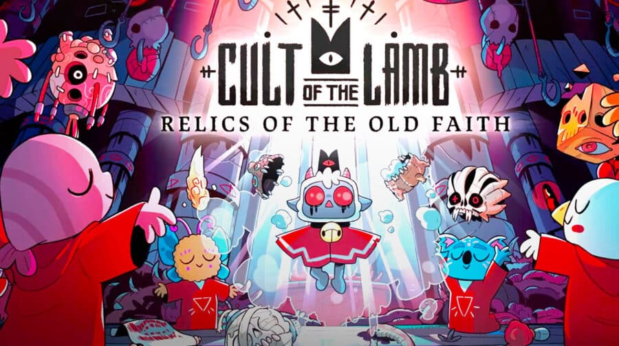

Cult of the Lamb

Lançado há exatos oito dias atrás, Cult of the Lamb, título indie publicado pela Devolver Digital e desenvolvido pela Massive Monster, já alcançou a marca de um milhão de cópias vendidas. O jogo, que tem um visual fofinho, conta a história de um “cordeiro possuído” que “é salvo da aniquilação por um estranho sinistro” e precisa criar seu culto para pagar a dívida.saiba mais
Hotline Miami

Hotline Miami é um jogo eletrônico 2D de ação do subgênero shoot 'em up. Criado por Jonatan Söderström e Dennis Wedin, ambos o desenvolveram usando a designação Dennaton Games, com o game sendo lançado pela Devolver Digital no dia 23 de outubro de 2012 para Microsoft Windows.saiba mais